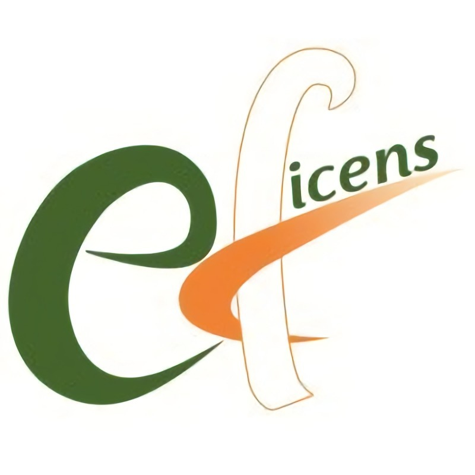
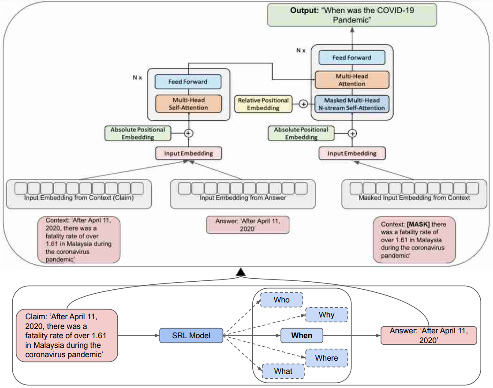
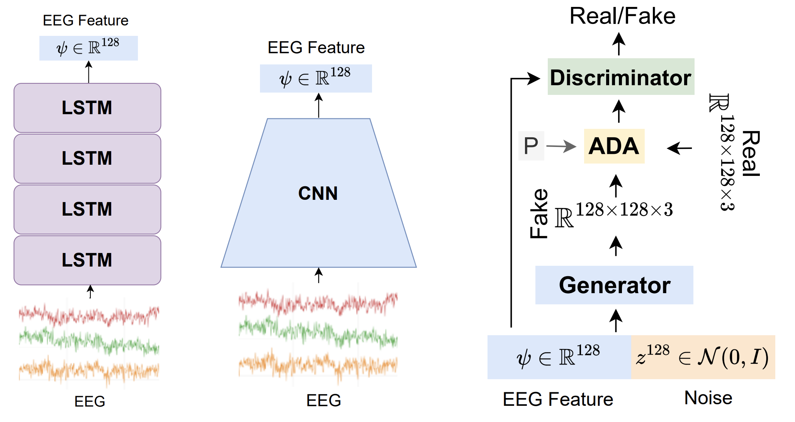
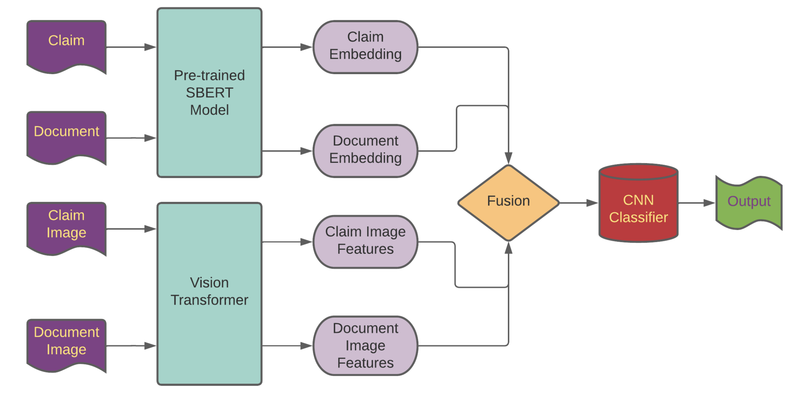
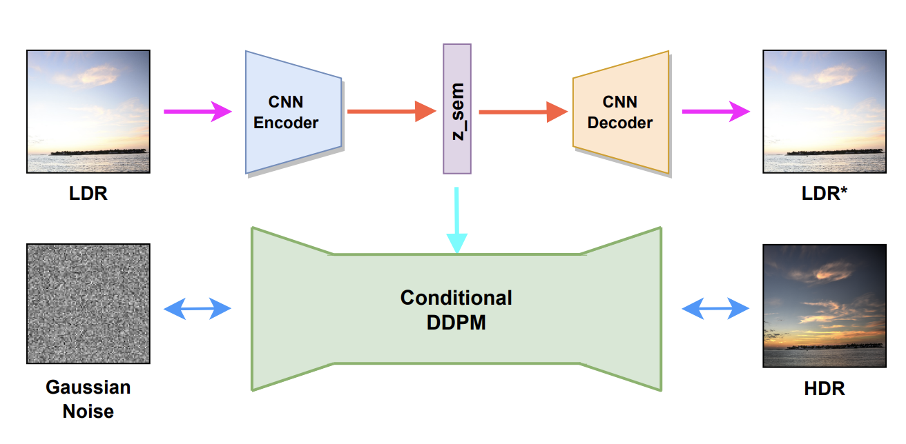
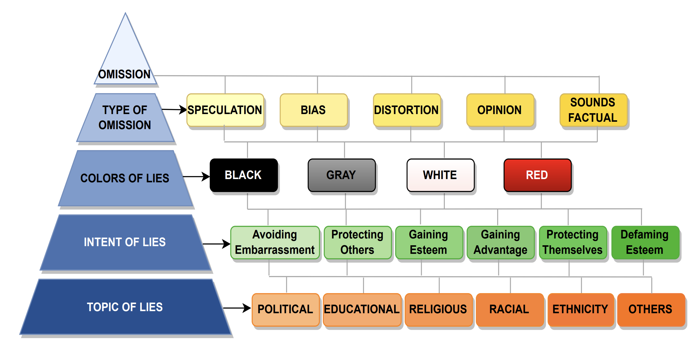
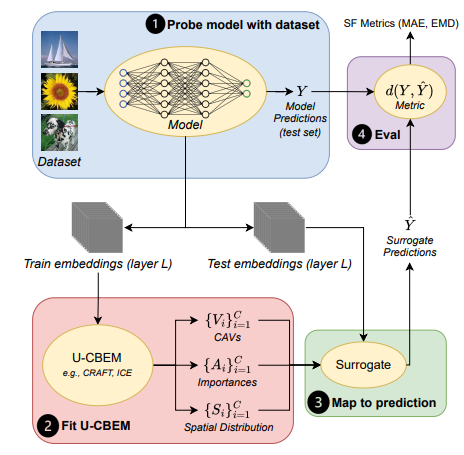
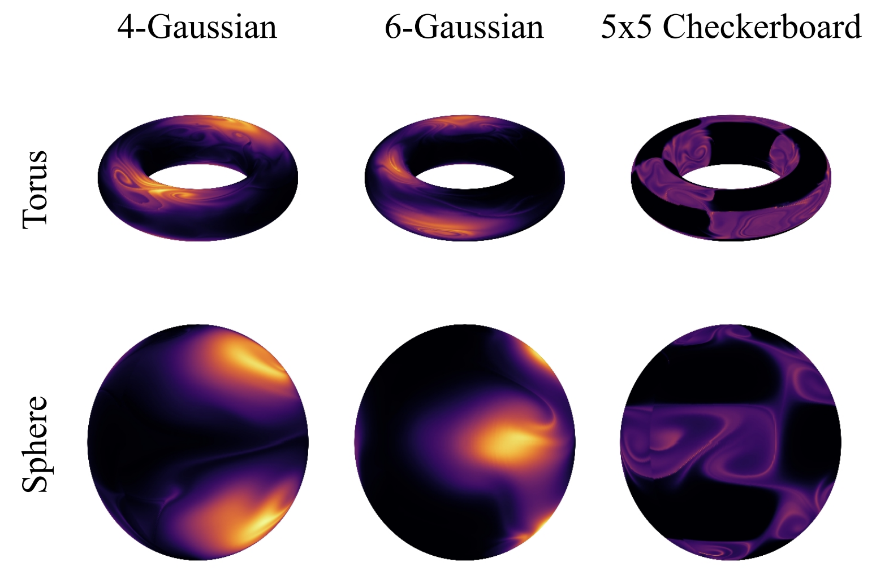
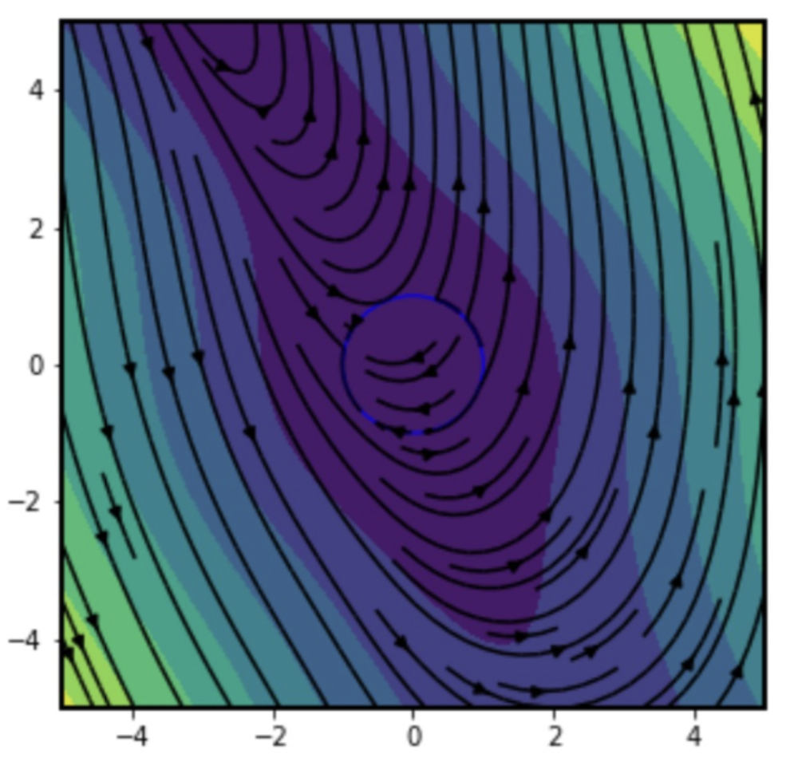
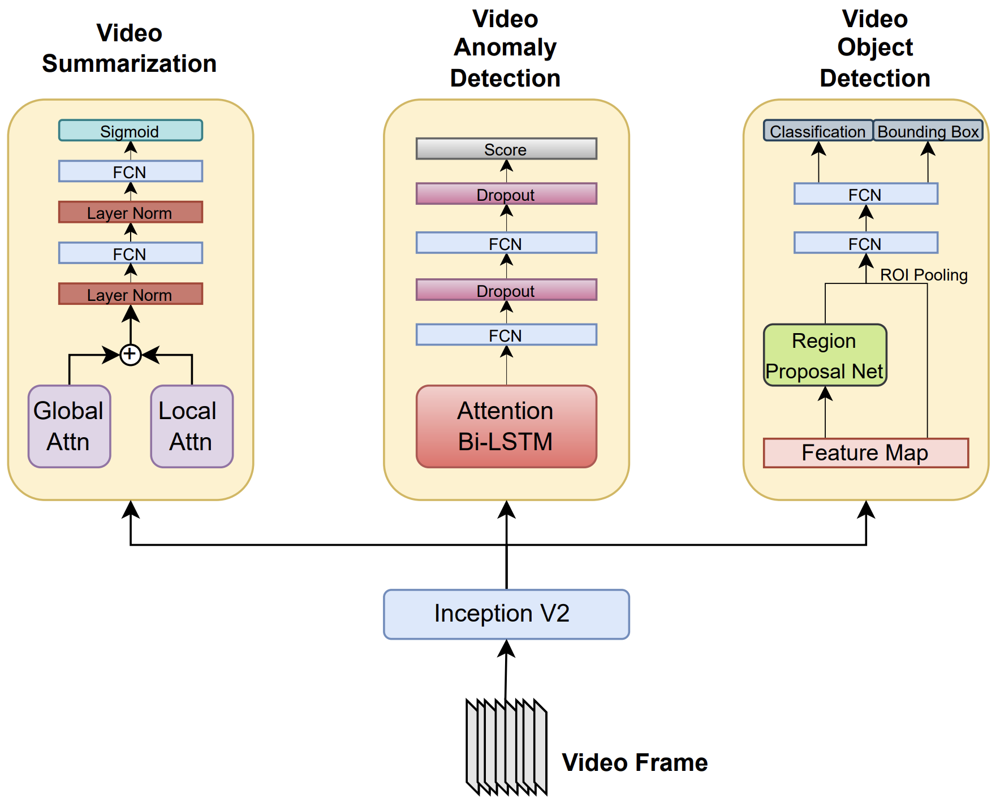

Dwip Dalal
Hi, I am Dwip Dalal, a first‑year PhD student in Electrical and Computer Engineering at the University of Illinois Urbana‑Champaign. My research interests lie in MLLMs, multi‑agents, generative AI, and multi‑modal representation learning. I’m fortunate to be mentored by Prof. Svetlana Lazebnik, Prof. Heng Ji and Prof. Unnat Jain.
Previously, I completed my B.Tech from Indian Institute of Technology, Gandhinagar, where I was awarded the Institute Gold medal for graduating at the top of my discipline.
I'm in Seattle for my summer internship at Microsoft Research — hit me up if you want to chat about cool topics!

Internships

Microsoft Research
Summer 2025 |

UBC
Summer 2023 |

USC (AIISC)
2022‑2024 |

ISRO
Spring 2023 |

TCS Research
Winter & Spring 2023 |

EFICENS
Summer 2022 |
News
- May 2025: Summer internship at Microsoft Research (Redmond), focusing on LLM agents and reasoning.
- Aug 2024: Awarded the Dilip and Sandhya Sarwate Graduate Fellowship at UIUC for the 2024‑2025 academic year.
- Jun 2024: Awarded the Institute Gold Medal at IIT Gandhinagar for highest CGPA.
- Feb 2024: Nominated by IIT Gandhinagar for the Pre‑Doctoral Research Assistant Program at Microsoft Research India.
- 2023: Perfect 10/10 GPA for two consecutive semesters (6th & 7th).
- Sep 2023: 1st of 200 in SmartSense ML hackathon; job offer as ML Engineer II.
Publications |
|  |
FACTIFY-5WQA: 5W Aspect-based Fact Verification through Question AnsweringAnku Rani, SM Tonmoy, Dwip Dalal, Shreya Gautam, Megha C., Aman Chadha, Amit Sheth, Amitava Das ACL 2023 Paper | project page |
|  |
Learning Robust Deep Visual Representations from EEG Brain RecordingsPrajwal Singh, Dwip Dalal, Gautam Vashishtha, Shanmuganathan Raman, Krishna Prasad Miyapuram WACV 2024 Paper | project page | WACV Daily | Best of WACV 2024 |
|  |
FACTIFY3M: A Benchmark for Multimodal Fact Verification with Explainability through 5W Question-AnsweringM Chakraborty, K Pahwa, A Rani, S Chatterjee, Dwip Dalal, H Dave, ... A Chadha, Amit Sheth, Amitava Das EMNLP 2023 Paper | Project Page |
|  |
Single Image LDR to HDR Conversion Using Conditional DiffusionDwip Dalal, Gautam Vashishtha, Prajwal Singh, Shanmuganathan Raman International Conference on Image Processing (ICIP'23) (Oral) Paper | Project Page |
 |
SEPSIS: I can catch your lies - A new paradigm for Deception DetectionAnku Rani, Dwip Dalal, Shreya Gautam, Pankaj Gupta, Vinija Jain, Aman Chadha, Amit Sheth, Amitava Das Arxiv, 2024, Paper | abstract |
 |
Surrogate Faithfulness: A Metric for Concept-Based ExplanationsShubham Kumar, Dwip Dalal, Narendra Ahuja under review, 2025 abstract | arxiv |
 |
Flow Symmetrization for Parameterized Constrained DiffeomorphismsDwip Dalal*, Aalok Gangopadhyay*, Progyan Das*, Shanmuganathan Raman Arxiv, 2024 Paper | Abstract | Project Page |
Workshop Papers |
|  |
ODESolvers are also Wayfinders: Neural ODEs for Multi-Agent PathplanningDwip Dalal*, Progyan Das*, Anirban Dasgupta NeurIPS 2023 Workshop - Deep Learning and Differential Equations III Paper | abstract |

|
MMT: A Multilingual and Multi-Topic Indian Social Media DatasetDwip Dalal, Vivek Srivastava, Mayank Singh EACL 2023 workshop - Cross-Cultural Considerations in NLP Paper | abstract |

|
Learning to Stabilize: Comparative Analysis of Reinforcement Learning and Traditional Methods for Swirling Pendulum ControlDwip Dalal, Shubhankar Riswadkar, Harish J Palanthandalam-Madapusi IEEE Indian Control Conference 2023 Paper | abstract |

|
Enhancing Cameras with Conditional Diffusion ModelDwip Dalal, Gautam Vashishtha, Prajwal Singh, Shanmuganathan Raman CVPR 2023 workshop - Computational Cameras and Display CCD Poster |
 |
VPTDrone: Video Processing Toolkit for Smart Surveillance DroneDwip Dalal, Anirban Dasgupta 7th Joint International Conference on Data Science & Management of Data, 2024 Paper |